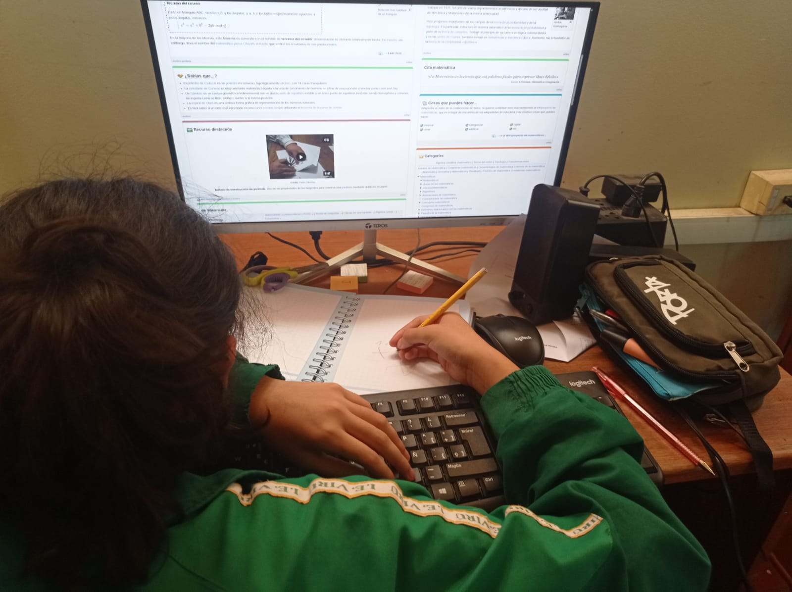
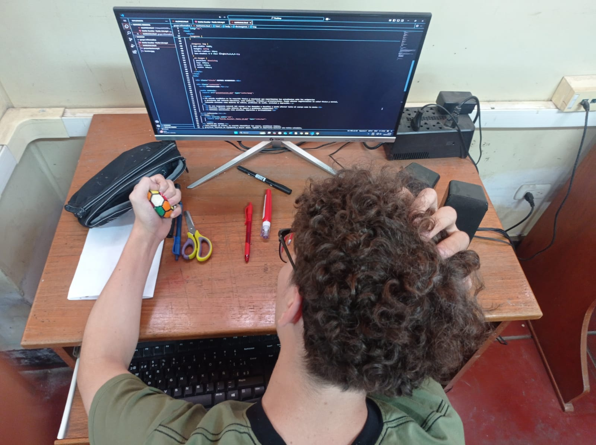
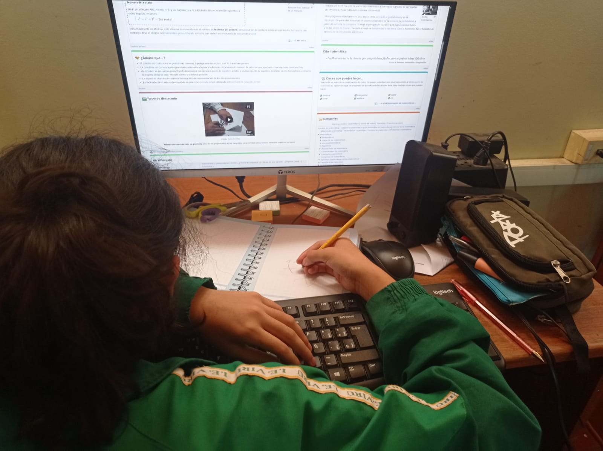
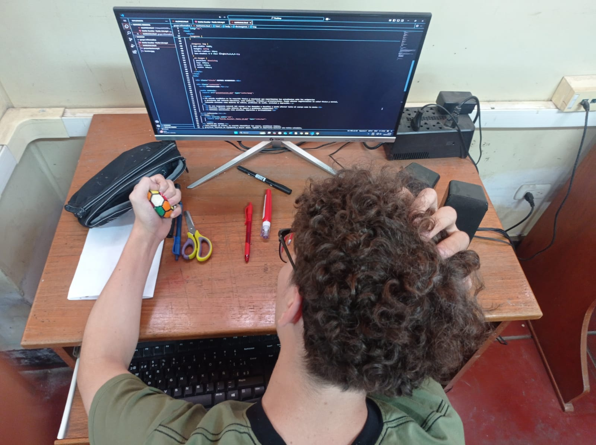
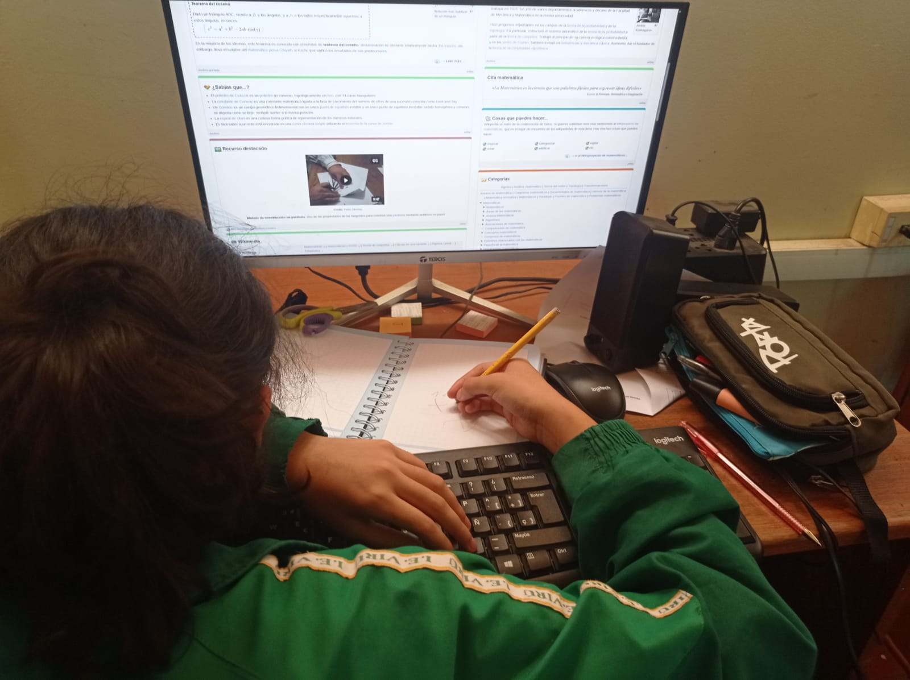
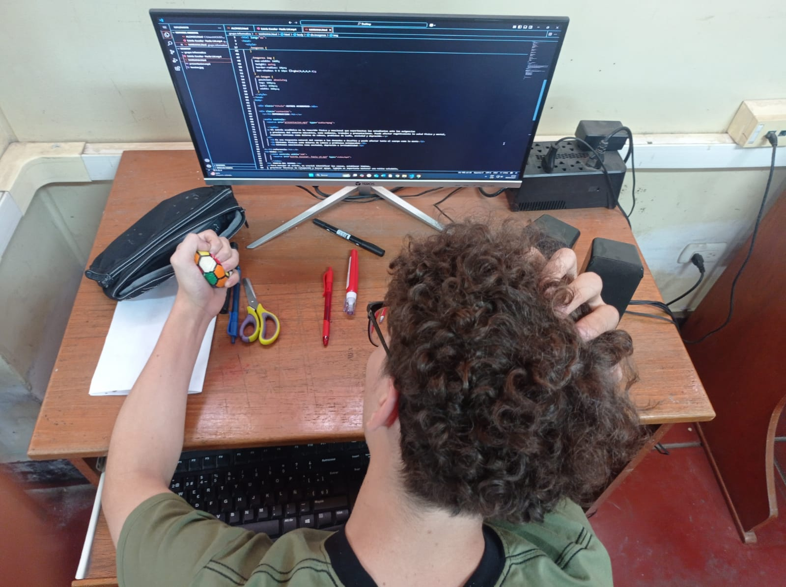

El estrés académico es la reacción física y emocional que experimentan los estudiantes ante las exigencias y presiones del entorno educativo, como exámenes, trabajos y presentaciones. Puede afectar negativamente la salud física y mental, causando síntomas como dolores de cabeza, problemas de sueño, ansiedad y depresión.
¿Cuáles son los signos del estrés?
Cuando tenemos estrés nos resulta difícil relajarnos y concentrarnos, y podemos sentirnos ansiosos o irritables. Además, el estrés puede causar dolor de cabeza o de otras partes del cuerpo, malestar gástrico, dificultades para dormir o alteraciones del apetito (comer más o menos de la cuenta). Cuando el estrés se cronifica, puede agravar problemas de salud y dar lugar a un aumento del consumo de tabaco, bebidas alcohólicas y otras sustancias.Las situaciones estresantes pueden causar o exacerbar problemas de salud mental, frecuentemente ansiedad o depresión, que requieren atención médica. Hay problemas de salud mental que pueden deberse a la persistencia del estrés si este ha empezado a afectar a nuestra vida y nuestro desempeño educativo o laboral.Para manejar el estrés, es crucial identificar las causas, establecer límites, practicar técnicas de relajación y buscar apoyo. También es importante mantener una rutina saludable, incluyendo ejercicio, alimentación balanceada y suficiente descanso
AGRADECIMIENTO
El agradecimiento de este proyecto va dirigido a mi profesora que gracias a su conocimiento y a mis compañeros de grupo por el apoyo y colobracion de esta pagina, tambien a mi perseverancia, esta va a ser la primera pagina que nosotros vamos a publicar

